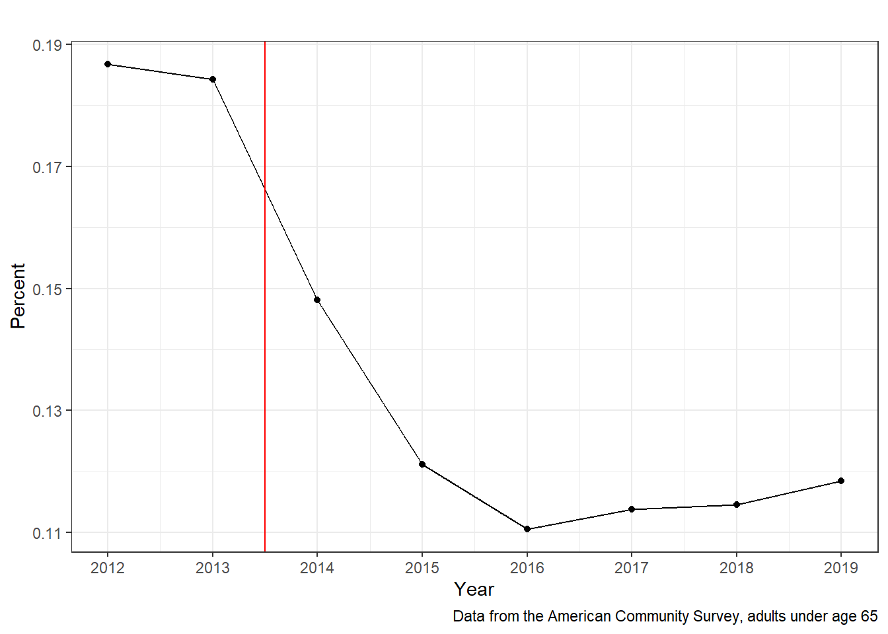

2 Getting Health Insurance
Health insurance in the United States has never been one coherent system. Instead, it has grown into a patchwork of programs and private arrangements that reflect both historical accidents and deliberate policy choices. Figure Figure 2.1 offers a snapshot from 2012, just before the Affordable Care Act (ACA) was fully implemented. At that time, nearly one in five adults under age sixty-five had no insurance at all. Among those who were covered, the vast majority relied on an employer, while much smaller shares purchased insurance directly or enrolled in Medicaid.
After the ACA took effect, the picture changed dramatically. As Figure Figure 2.2 shows, the share of adults without insurance fell sharply, especially after 2014 when Medicaid expansions began and new marketplaces opened for non-group coverage. Figure Figure 2.3 makes clear that the reduction in uninsurance was driven almost entirely by increases in Medicaid enrollment and in people buying coverage on their own.

These trends point to an important reality: health insurance in the U.S. is fragmented. Where someone gets coverage depends on their job, their age, their income, and sometimes even their military service. The purpose of this chapter is to walk through these different pathways—employer-sponsored insurance, the non-group market, Medicare, Medicaid, and the Veterans Health Administration—and to explain how each works. By the end, the overall system may still feel complicated, but the pieces will begin to make sense.
2.1 Private Health Insurance
We begin with private coverage, since for most working-age adults this remains the dominant source of insurance.
2.1.1 History of Private Health Insurance
The origins of modern health insurance in the United States can be traced to a modest experiment in Dallas in 1929. Baylor University Hospital offered local schoolteachers a simple arrangement: for six dollars a year—about one hundred dollars in today’s dollars—teachers were guaranteed up to twenty-one days of hospital care. The plan resembled a subscription, but it was revolutionary. It gave teachers financial protection against an expensive and uncertain event, and it provided the hospital with a predictable stream of revenue.
This model spread quickly. By the early 1930s, hospitals across the country had organized similar prepayment schemes under the name Blue Cross. A few years later, physicians developed parallel plans known as Blue Shield. Together, Blue Cross and Blue Shield dominated the early insurance market, operating as nonprofit organizations that were exempt from many state regulations. Hospitals were typically reimbursed on a cost-plus basis, meaning they were paid for their actual costs plus a margin. While this guaranteed hospital solvency, it also muted incentives for cost control.
By the 1940s, Blue Cross and Blue Shield plans covered millions of Americans. Their growth established two features that remain central to U.S. health insurance: coverage tied to institutions rather than a national program, and payment systems that often encouraged higher rather than lower spending. Yet the story did not stop there. Even as Blue Cross and Blue Shield became household names, a different path was emerging—one that would make employers the central link between most Americans and their health insurance.
2.1.2 Employer Sponsored Insurance
Employer-sponsored insurance, or ESI, is today the most common way that non-elderly Americans obtain coverage. Its rise was not inevitable but reflected a mix of economic pressures and policy choices in the mid-twentieth century.
During World War II, wage and price controls limited employers’ ability to raise salaries. To compete for scarce workers, firms began offering more generous fringe benefits, including health insurance. A decade later, federal tax policy solidified this practice. In 1954, Congress excluded employer contributions to health insurance from employees’ taxable income. For workers, this meant that a dollar of health insurance was worth more than a dollar of wages, since the former was untaxed. Together, wartime wage controls and the tax exclusion made health insurance through the workplace the norm.
The basic structure of ESI has remained remarkably stable. Employers typically pay most of the premium, while employees contribute the remainder through pre-tax payroll deductions. Large firms often self-insure, bearing the financial risk of claims while hiring an insurer to administer the plan. Because self-insured plans are governed by federal law under ERISA, they are largely shielded from state insurance regulations and premium taxes. This makes ESI especially attractive for firms that operate in multiple states.
Despite repeated reforms in other parts of the health system, federal policy has largely left ESI untouched. As a result, the United States is unusual among high-income countries in continuing to rely on employers as the primary source of coverage for working-age adults. Still, not everyone can or does obtain insurance through a job, which brings us to the next major pathway: the individual or “non-group” market.
2.1.3 Non-group health insurance
Not everyone has access to insurance through an employer, and not everyone qualifies for a public program. For these individuals and families, the alternative is to purchase coverage directly in what is known as the non-group or individual market. This market has existed for decades, but prior to the Affordable Care Act it was notoriously difficult to navigate. Insurers could deny coverage or charge very high premiums to people with pre-existing conditions, impose annual or lifetime benefit limits, and sell plans that excluded important services. As a result, many people who most needed coverage were least able to obtain it.
The ACA fundamentally reshaped this market. Beginning in 2014, it created state-based or federally run marketplaces (often called “exchanges”) where individuals could compare and purchase standardized plans. These marketplaces required insurers to cover a core set of “essential health benefits,” prohibited discrimination based on pre-existing conditions, and offered income-based subsidies to make coverage more affordable. These reforms dramatically expanded access to non-group insurance, especially in states that did not expand Medicaid.
It is worth noting that the ACA also established SHOP exchanges for small employers, creating a parallel marketplace in the small-group sector. In practice, however, SHOP coverage has remained very limited, and the exchanges are most significant as a channel for individual (non-group) plans.
Even after these reforms, non-group insurance remains a relatively small share of overall coverage compared with employer-sponsored insurance and public programs. Still, for millions of people without access to those other pathways, it has become an essential option.
2.2 Public Insurance
But not all coverage flows through employers or the individual market. A large share of the population relies on publicly financed programs, each with distinct rules and target groups. Over time, the United States has developed several public programs that together insure tens of millions of people. These programs differ in who they cover, how they are financed, and how they pay providers, but they all reflect the idea that certain populations should have guaranteed access to health care regardless of employment or income. The major public programs are Medicare, Medicaid, and the Veterans Health Administration, along with TRICARE for active-duty service members and their families.
2.2.1 Medicare
Created in 1965, Medicare provides health insurance primarily to people aged sixty-five and older, as well as to certain younger adults with disabilities. Traditional, or “Original,” Medicare includes Part A, which covers inpatient hospital and post-acute services, and Part B, which covers physician and outpatient services. Part A is usually premium-free for those who have contributed payroll taxes, while Part B requires a monthly premium. Beneficiaries can see any provider who accepts Medicare, making the program broad in scope. Hospitals are paid under prospective payment systems such as Diagnosis Related Groups (DRGs), and physicians are paid through standardized fee schedules. Although this provides stable access to care, beneficiaries are still responsible for deductibles and co-insurance (Definition 1.3; Definition 1.4), so many purchase supplemental Medigap policies.
Since 2003, beneficiaries have also had the option of enrolling in Medicare Advantage (Part C). Under this arrangement, the federal government pays private insurers a risk-adjusted capitation for each enrollee, and the insurer provides all Medicare benefits, often bundling in extras like prescription drug coverage (Part D), vision, or dental care. Most Medicare Advantage plans operate as managed care products (Definition 1.1) with provider networks (Definition 1.2), utilization management, and cost-sharing rules (Section 1.3.2). Enrollment in Medicare Advantage has grown steadily, and today roughly half of all Medicare beneficiaries are in these plans.
2.2.2 Medicaid
Medicaid, also enacted in 1965, is a joint federal–state program that provides coverage to low-income adults and children, pregnant people, people with disabilities, and many elderly individuals needing long-term care. Unlike Medicare, Medicaid is means-tested, and eligibility rules vary by state within federal guidelines. The program covers a wide range of services, including hospital care, physician visits, prescription drugs, preventive care, and long-term services and supports.
Historically, states paid providers directly under fee schedules, but today most Medicaid beneficiaries are enrolled in managed care organizations (MCOs), which operate on the same logic as other managed care products (Definition 1.1). In this arrangement, states pay insurers a capitated rate per enrollee, and the insurer then contracts with providers. This shift has been motivated by goals of cost control, care coordination, and improved access. Federal matching funds (FMAP) make Medicaid one of the largest budget items in both state and federal health spending. The Affordable Care Act further expanded Medicaid eligibility in participating states, contributing to the sharp decline in the uninsured rate after 2014.
2.2.3 Veterans Health Administration and TRICARE
The Veterans Health Administration (VA) operates as an integrated insurer and provider system, delivering care directly through a nationwide network of VA hospitals and clinics. Funded through congressional appropriations, the VA employs its own clinicians and emphasizes services tailored to the needs of veterans, such as treatment for post-traumatic stress disorder and traumatic brain injury. Eligible veterans face little or no cost for care, though eligibility rules can be complex.
In parallel, the Department of Defense administers TRICARE, which provides health insurance to active-duty service members, retirees, and their families. Unlike the VA, TRICARE functions more like a traditional insurance product, contracting with private networks (Definition 1.2) and offering a range of plan types. While TRICARE covers a broader population, the VA remains focused on veterans and operates its own delivery system.
2.3 How Insurers Pay Providers
The different sources of insurance we have covered—private, Medicare, Medicaid, and the VA—share the same ultimate task: paying providers for care. Yet the way they do so varies, and these differences help explain both how money flows through the health system and why incentives for hospitals and physicians look the way they do.
Private Insurance (including MA)
Private insurers, whether through employer-sponsored coverage, direct purchase, or Medicare Advantage, typically negotiate contracts with providers in advance. These contracts establish the allowed amounts they will pay for specific services, as opposed to the provider’s list charges (Section 1.4). When a patient receives care, the provider submits a claim, and the insurer pays the agreed rate—minus any deductible, co-payment, or co-insurance owed by the patient (Section 1.3.2).
In recent years, some insurers have moved toward capitated payments, in which providers are paid a fixed amount per enrollee rather than per service. Capitation is most common in systems that integrate insurance and delivery, such as Kaiser Permanente. For most private coverage, however, payment remains rooted in negotiated fee-for-service contracts.
Traditional Medicare
Medicare’s fee-for-service model relies on administratively set prices rather than individual negotiation. Hospitals are paid prospectively through Diagnosis Related Groups (DRGs), which assign each inpatient admission to a category with a fixed payment rate. Physicians are reimbursed under a standardized fee schedule. Beneficiaries are still responsible for some cost-sharing (Section 1.3.2), but providers cannot balance-bill beyond the allowed Medicare amounts. This structure provides stable access but also leaves providers little flexibility to negotiate higher rates.
Medicaid
Medicaid payment varies by state. In traditional fee-for-service Medicaid, providers are reimbursed according to state-determined fee schedules, which generally pay less than Medicare or commercial insurance. Today, however, most enrollees are in Medicaid managed care organizations (MCOs) (Definition 1.1). States pay these MCOs a capitated rate per enrollee, and the insurer then contracts with providers, functioning much like private insurance but with lower overall payment levels.
Veterans Health Administration
The VA stands apart as both insurer and provider. Rather than paying outside hospitals and physicians, it operates its own network of hospitals and clinics and directly employs clinicians. Funding comes through congressional appropriations, which cover salaries, facilities, and equipment. Veterans may face modest co-pays, but for most services the VA functions as a fully integrated, tax-funded delivery system.
2.4 Final Thoughts
Taken together, these payment systems reinforce the fragmented nature of U.S. health insurance. Whether a provider is paid according to negotiated rates, a federal fee schedule, or a congressional appropriation depends not on the service itself, but on who the patient happens to be insured by. This patchwork produces stark differences in what patients pay, what providers earn, and how care is delivered. In the chapters that follow, we will look more closely at these differences, particularly how insurers negotiate prices, how benefit design shapes patient behavior, and how providers respond to the incentives embedded in each payment system.